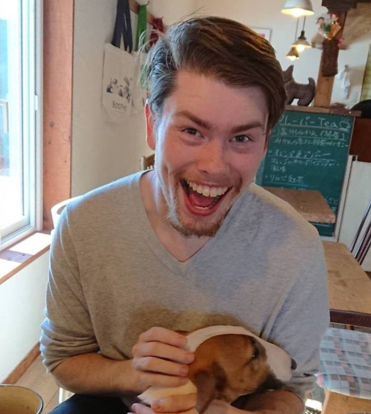

|  |
会社概要「前歩翻訳」は２０１９年にケント州立大学の世界有数の翻訳修士プログラムを卒業したT.J. Wissickによって設立されました。当大学院へ進学する以前、T.J.は数年間北海道に住み、日本文化を深く理解する上で日本語への関心がより高まりました。前歩翻訳では、どのような翻訳でも心を込めて質の高いサービスを提供します。「前歩」とは、そもそも日本語の言葉ではなく、我が社がミッションを明確に表現できるための造語です。意味は、「前の一歩」で、「前への一歩」と「今より前の一歩」の両方の意味があります。したがって、「前の一歩」とは、これより絶えず改善することと共に、これより前に得た知識を生かして働きかけることです。我が社にとって、お客様が第一です。優れた技術と細心の注意を払って目標言語にも効率的に機能できるよう、務めさせていただきます。 前歩翻訳は、どんなプロジェクトでも全力投球で取り組みます。翻訳の先端技術 （SDL TRADOS 2017など）や文化に関する知識も十分あり、スリム化したプロセスには比類ない質と最大効率を保証します。もっと知りたい方は、サンプルをご覧ください。 |
| Contact Us | ©2019 Zenpo Translations | About Services Clients Portfolio Resume |